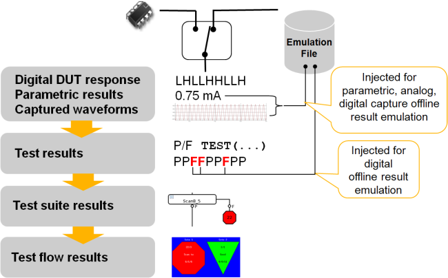

Concept of offline result emulation

The left side of the figure, top to bottom, depicts the sequence of result stages that finally lead to the test flow result, which is the binning.
At the first stage, the digital DUT response, for example the signals at the digital output pins of the device, are sampled by the connected digital tester channels at the result edge positions. Single-value parametric measurements are taken from the device, using a variety of instruments, for example device power supplies (DPS), analog instruments or the per-pin PMU of digital channels. Waveforms are captured from the DUT, by means of various possible instruments, most importantly analog instruments. If a digital channel is used for capturing waveform data, this is called digital capture.
The data captured at the first stage becomes the input for the second stage which performs tests, for example comparing actual against expected values (limits), that lead to pass/fail (P/F) results. For the digital DUT responses, this is handled by patterns on a cycle-by-cycle basis. For parametric results and captured waveforms this is typically done inside a test method, with TEST() statements determining the test results.
A test suite calls a test method which performs one or more tests. If one or more of the tests are failing, the test suite exits on the fail branch. If all tests are passing, the test suite exits on the pass branch.
Finally, on the test flow level, bins are connected to exit ports of a test suite. The bins are determining the overall test flow result.
There is a global switch in the system, implemented in terms of a test method configuration API, which determines whether offline result emulation is enabled or not.
- SmarTest runs in offline mode and offline result emulation is disabled:
Hard coded values will be returned for parametric measurements and captured waveforms (typically 0.0). Digital patterns will always pass.
- SmarTest runs in offline mode and offline result emulation is enabled:
Parametric values and captured waveforms are taken from the ORE setup data configuration file which has an XML based data format. For digital patterns, failing cycles are specified in this file.
- SmarTest runs in online mode:
offline result emulation has no effect, no matter if enabled or not.
It is important to note that parametric results and captured waveforms are injected at the lowest level of the result chain, whereas digital cycle failures are injected at the test level.
It is not possible to
- directly specify the digital DUT response on the lowest level,
- directly inject test results for parametric measurements or captured waveforms, and
- directly inject test suite results or test flow results.
Offline result emulation characteristics
- Configured by the API class OfflineResultEmulationConfig
- Changes the behavior of different existing API functions
(see Offline result emulation for the FlexDC API and Offline result emulation for the analog API)
- Emulates result data according to a corresponding setup file (see Digital offline result emulation).
Functional changes
- Introduced in SmarTest 7.1.3